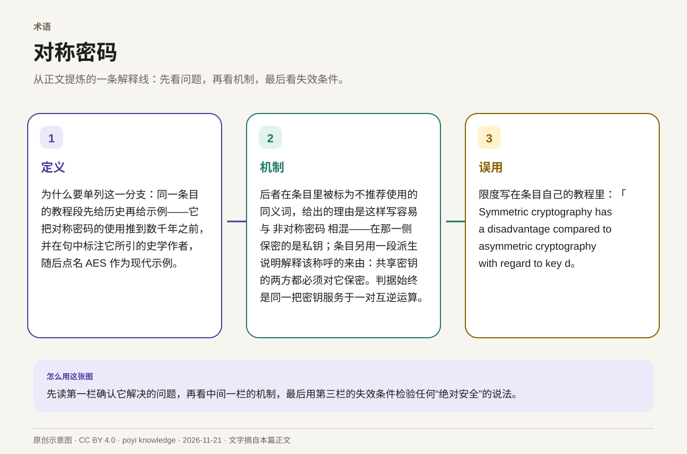

原理与机制
术语：对称密码（Symmetric Cryptography）。定义句是：「A branch of cryptography in which the algorithms use the same key for both of two counterpart cryptographic operations (e.g., encryption and decryption).」条目接着给出 See 与 Compare 两条交叉引用：对照词是非对称密码，另一称呼是 secret-key cryptography。后者在条目里被标为不推荐使用的同义词，给出的理由是这样写容易与非对称密码相混——在那一侧保密的是私钥；条目另用一段派生说明解释该称呼的来由：共享密钥的两方都必须对它保密。判据始终是同一把密钥服务于一对互逆运算。

为什么重要
为什么要单列这一分支：同一条目的教程段先给历史再给示例——它把对称密码的使用推到数千年之前，并在句中标注它所引的史学作者，随后点名 AES 作为现代示例。分支划分的价值在于把共享密钥这一前提独立出来：一旦它成立，密钥分配与保密就成了主要成本，而这正是条目接下来说明的劣势；把这一支与其非对称对照分开叙述，才让选型讨论有可指认的对象。
应用与实例
用法边界由 HAC 第一章 1.8.4 节的对照清单给出（那里是分条列举，不是表格）：它把对称密钥密码的第一条优势写成吞吐——「Symmetric-key ciphers can be designed to have high rates of data throughput.」并举硬件可达每秒数百兆字节、软件在每秒兆字节量级；随后列出三条进一步的工程理由：密钥相对短、可作原语构造伪随机数生成器与哈希函数等机制、以及可复合成更强的密码。同一小节的劣势清单把负担落在密钥管理：密钥在两端正都要保密、大网络里密钥对数量庞大、有效管理还需要一个无条件可信的第三方。
边界与攻击面
限度写在条目自己的教程里：「Symmetric cryptography has a disadvantage compared to asymmetric cryptography with regard to key distribution.」它给的例子是一段单向的双人通信：Alice 用一把密钥加密她要发给 Bob 的数据，Bob 用同一把密钥解密，而把共享密钥保密本身就带来成本与风险——密钥要分发到两端即是暴露面。因此这一分支的代价不在算法强度，而在共享密钥的分发与保管；条目末尾的两条交叉引用也正是 key distribution 与 key management。
历史与背景
版本事实：HAC 第一章在注记节把这一族的年代写成转引的历史判断——「Symmetric-key encryption has a very long history, as recorded by Kahn」——并断言 1970 年代之前发明的多数系统如今只剩历史价值。同一节把公钥密码的引入归给 Diffie 与 Hellman、把 DES 的原始规范定为 1977 年的美国联邦信息处理标准 46；本章开篇另把 Feistel 在 IBM 的工作放在 1970 年代初期、把 DES 的采用定在 1977 年。该条目因此把这些年代记为该手册自己的叙述，并保留其转引性质。
逐步示例与核验
定义检查模型
上位概念 → 区别特征 → 正例 → 反例 → 易混边界。正例必须落在外延内；反例必须刚好跨过边界；同义词不能代替定义。
参考出处
- Wikipedia search entry for 对称密码. https://zh.wikipedia.org/w/index.php?search=%E5%AF%B9%E7%A7%B0%E5%AF%86%E7%A0%81
- RFC 4949: Internet Security Glossary, Version 2. https://www.rfc-editor.org/rfc/rfc4949